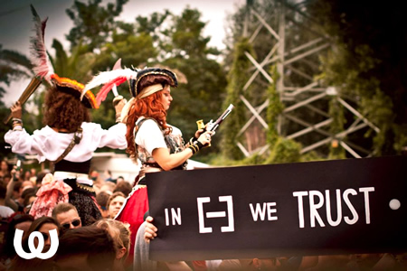

Richie Hawtin & Watergate pres. Sunday Adventure Club @ Rummelsburg (18/08/13)
{kind=link}
Germany might have suffered one of the greyest, bleakest winters in decades, but it’s been compensated by a proper scorcher of a summer; ideal for getting outside to enjoy Berlin’s legendary open-air scene, and Watergate’s FLY series at Rummelsburg in the city’s east have proved some of the best. Starting in May and hosting stables like Diynamic Music, Circo Loco and Innervisions during its run, Sunday saw perhaps the best yet with Sunday Adventure Club, headlined by Richie Hawtin and Steve Bug alongside a host of other fine talent.
As great as the weather has been in Berlin recently, Sunday was threatened by a few grey clouds and intermittent spats of rain – luckily though, it did nothing to dampen the energy of the day, which drew one of the best kinds of down-to-earth party crowds you can get in Berlin. The theme of the day was consistent with the artwork adorning the party’s advertising, featuring Hawtin, Bug and others donning pirate gear. The stage was decked out like a pirate ship, while a host of (decidedly sexy) pirates strutted amongst the crowd handing out eye patches.
M-nus recruit Matador was pumping out the techno at the main Beach Stage upon arrival in the afternoon, and this would set the tone for the rest of the afternoon. Moving later to Paco Osuna and then Gaiser, who tookthings through to Hawtin’s headline set at sundown, it was driving minimal techno, heavy on the rattling percussion, and light on the other meddling elements like melody that might have gotten in the way of the fist-pumping fun.
And what a setting the lads were given to do their thing, too. For a city so far inland, Berlin goes to extreme lengths to convince itself it’s a sandy, coastal paradise during the summer months, and Rummelsburg might just be one of the world’s best open-air spots. Sand is under your feet everywhere you go, with the Beach Stage situated in a big, wide-open and very comfortable dance area, a canopy stretching overhead and flanked by bars and the occasional podium. Not to mention the flawless, crystal-clear sound made possible by the speakers strategically circling the dancefloor, plus an idyllic view of the river, stretching out to the distance to your left.
A brief a walk down the sandy pathway at the back of the dancefloor opens up to the second ‘Watergate Stage’, positioned to face the river’s edge. Dancing under the shaded canopy offered by the trees, the spot is impossibly beautiful, though also uber-relaxed in terms of feeling like a cruisy campsite where the organisers might have spontaneously set up a few speakers.
If the pumping sounds at the Beach Stage were unrelenting, the sounds next door offered the perfect contrast for an open-air event, a finely curated selection of groovy tech house delivered with dancefloor style by Matthias Meyer, Ruede Hagelstein and Marco Resmann during the afternoon, in the leadup to Steve Bug’s closing performance.
{kind=link}

The grooves were kept straight up and inviting here, with the Watergate residents moving through fine selection of 2013’s movers and shakers; Jamie Jones "Moan and Groan", Fabio Giannelli "Maintain", Romanthony "The Wanderer". The accessible vibe here, and the careful musical programming and contrast across the two stages, meant that a proper range of musical tastes were catered for.
While there’d been light splatters of rain throughout the afternoon, the sun could be seen breaking through the clouds over the river just as Richie Hawtin was hitting the Beach Stage at 8pm. The M-nus boss has proved himself a professional in terms of rocking the big stages, shaking up Ibiza with the success of his Enter. residency and hosting stages at festival behemoths like Tomorrowland. The Beach Stage today felt almost a little modest in comparison, with his trademark bouncy, punchy minimal sound losing a touch of its impact. However, energy levels were definitely high, and those spiraling, spectacular buildups still did the appropriate damage, sending waves of cheers through the heaving crowd.
If Hawtin’s minimalism ever became a touch monotonous, you were spoilt with the option of being able to wander down the path to catch Poker Flat boss Steve Bug delivering a typically honed and polished set, nimbly hopping across the different realms of deep and tech house. But bundled with the setting and the crowd, the excellent music was really only one of the reasons why Sunday Adventure Club made for such a sublime Berlin afternoon.
www.fly-watergate.de
| Watergate Online | |||